| 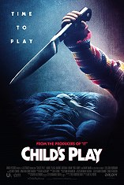 |
Child's play:Duur: 120 minutenGenre: Horror, komedie Verwacht: Vanaf 19 juni Een moeder geeft haar zoon een speelgoedpop voor zijn verjaardag, maar ze is zich niet bewust van het sinistere karakter... |
|||||||||||||||||||||||||||||||||||||||||||||||||||||||||||||||||||||||||||||||||||||||||||||||||
|---|---|---|---|---|---|---|---|---|---|---|---|---|---|---|---|---|---|---|---|---|---|---|---|---|---|---|---|---|---|---|---|---|---|---|---|---|---|---|---|---|---|---|---|---|---|---|---|---|---|---|---|---|---|---|---|---|---|---|---|---|---|---|---|---|---|---|---|---|---|---|---|---|---|---|---|---|---|---|---|---|---|---|---|---|---|---|---|---|---|---|---|---|---|---|---|---|---|---|
| Regie: Lars Klevberg | Cast: Aubrey Plaza, Brian Tyree Henry, Gabriel Bateman, David Lewis | |||||||||||||||||||||||||||||||||||||||||||||||||||||||||||||||||||||||||||||||||||||||||||||||||
Men in black international:Duur: 115 minutenGenre: Actie, komedie, sci-fi Verwacht: Vanaf 19 juni The world's not going to save itself. The Men in Black hebben altijd de aarde beschermd tegen het uitschot van het universum. In deze nieuwe spectaculaire actiefilm krijgen agent H (Chris Hemsworth) en agent M (Tessa Thompson) te maken met de grootste en meest wereldwijde dreiging tot nu toe: een mol in de Men in Black organisatie. |
||||||||||||||||||||||||||||||||||||||||||||||||||||||||||||||||||||||||||||||||||||||||||||||||||
| Regie: F. Gary Gray | Cast: Chris Hemsworth, Tessa Thompson, Liam Neeson, Rebecca Ferguson | |||||||||||||||||||||||||||||||||||||||||||||||||||||||||||||||||||||||||||||||||||||||||||||||||
| 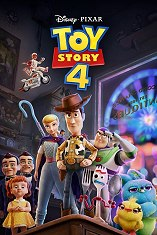 |
Toy story 4 NV/OV:Duur: 89 minutenGenre: Animatie, avontuur, familiefilm, komedie Verwacht: Vanaf 26 juni Woody en Bo Peep zijn stapelverliefd op elkaar en leven gelukkig samen. Dit maakt het des te meer pijnlijk wanneer zij plotseling wordt weggegeven. Hierop start Woody samen met zijn kameraad Buzz Lightyear een zoektocht om haar terug te krijgen. De cowboy en de astronaut beleven een avontuur vol opwinding en gevaar, want Bo Peep blijkt niet zo makkelijk te vinden. |
|||||||||||||||||||||||||||||||||||||||||||||||||||||||||||||||||||||||||||||||||||||||||||||||||
| Regie: Josh Cooley | Cast: Tom Hanks, Tim Allen, Annie Potts, Joan Cusack | |||||||||||||||||||||||||||||||||||||||||||||||||||||||||||||||||||||||||||||||||||||||||||||||||
Booksmart:Duur: 105 minutenGenre: Komedie Verwacht: Vanaf 26 juni Getting Straight A’s. Giving Zero F’s. De beste vriendinnen Amy en Molly staan aan de vooravond van hun diploma-uitreiking wanneer ze beseffen dat ze de afgelopen jaren alleen maar in de bibliotheek hebben gezeten en veel te weinig hebben gefeest. Ze komen er achter dat hun klasgenoten wél de bloemetjes buiten hebben gezet en toch zijn toegelaten op dezelfde universiteiten. Ze besluiten iedereen te laten zien dat zij ook weten wat het is om te feesten! Nu moeten de meiden er alleen wel achter zien te komen waar het examenfeest is waar ze moeten zijn, want dat is informatie die ze niet in hun studieboeken kunnen vinden. |
||||||||||||||||||||||||||||||||||||||||||||||||||||||||||||||||||||||||||||||||||||||||||||||||||
| Regie: Olivia Wilde | Cast: Kaitlyn Dever, Beanie Feldstein, Mason Gooding, Skyler Gisondo | |||||||||||||||||||||||||||||||||||||||||||||||||||||||||||||||||||||||||||||||||||||||||||||||||
| 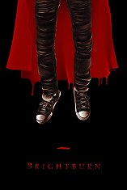 |
Brightburn:Duur: 90 minutenGenre: Drama, Sci-fi, thriller Verwacht: Vanaf 26 juni Een man en vrouw kunnen hun kinderwens niet vervullen, maar vinden op een dag een baby. Ze noemen hem Brendan en voeden op hem. Jaren later wordt het duidelijk dat Brendan geen normale jongen is en over bovennatuurlijke krachten beschikt. Een gevecht om te overleven begint. |
|||||||||||||||||||||||||||||||||||||||||||||||||||||||||||||||||||||||||||||||||||||||||||||||||
| Regie: David Yarovesky | Cast: Elizabeth Banks, David Denman, Meredith Hagner, Matt Jones | |||||||||||||||||||||||||||||||||||||||||||||||||||||||||||||||||||||||||||||||||||||||||||||||||
| 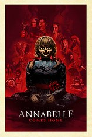 |
Annabelle comes home:Duur: 106 minutenGenre: Horror Verwacht: Vanaf 3 juli Annabelle Comes Home is het derde deel van de succesvolle New Line Cinema Annabelle- filmreeks met in de hoofdrol de bezeten pop uit The Conjuring Universe. Vastbesloten om Annabelle ervan te weerhouden om nog meer verwoesting aan te richten, brengen de demonologen Ed en Lorraine Warren de bezeten pop naar een afgesloten kamer met bovennatuurlijke objecten in hun huis. Annabelle wordt opgesloten achter heilig glas, een glazen vitrine gezegend door een priester. Maar er volgt een onheilspellende nacht vol afschuw als Annabelle de boze geesten in de kamer doet ontwaken, die allemaal hun zinnen hebben gezet op een nieuw doelwit – de tienjarige dochter van de Warrens, Judy, en haar vrienden. |
|||||||||||||||||||||||||||||||||||||||||||||||||||||||||||||||||||||||||||||||||||||||||||||||||
| Regie: Gary Dauberman | Cast: Mckenna Grace, Madison Iseman, Katie Sarife, Patrick Wilson | |||||||||||||||||||||||||||||||||||||||||||||||||||||||||||||||||||||||||||||||||||||||||||||||||
Spider-Man: far from home 2D/3D:Duur: 129 minutenGenre: Actie, avontuur, sci-fi Verwacht: Vanaf 3 juli 'Spider-Man: Far from Home' speelt zich af na de gebeurtenissen van 'Avengers: Endgame'. Peter Parker gaat met zijn vrienden op zomervakantie door Europa. Maar tijdens de vakantie blijkt dat hij zijn vrienden moet redden van een nieuwe vijand, Mysterio genaamd. |
||||||||||||||||||||||||||||||||||||||||||||||||||||||||||||||||||||||||||||||||||||||||||||||||||
| Regie: Jon Watts | Cast: Tom Holland, Jake Gyllenhaal, Zendaya, Samuel L. Jackson | |||||||||||||||||||||||||||||||||||||||||||||||||||||||||||||||||||||||||||||||||||||||||||||||||
| 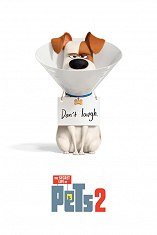 |
Huisdiergeheimen 2 NV/OV:Duur: 92 minutenGenre: Animatie, familiefilm, avontuur, komedie Verwacht: Vanaf 3 juli Secret Life Of Pets 2 is de nieuwe vrolijke animatiefilm van Illumination Entertainment en Universal Pictures, de makers van De Grinch, Minions en Sing. Het is het vervolg op de grote bioscoophit uit 2016 die onthulde wat onze huisdieren uitspoken als de baasjes van huis zijn. Opnieuw volgen wij de hilarische avonturen van de trouwe terriër Max, de slome kat Chloe, het snoezige dwergkeeshondje Gidget, mopshond en lady-killer Mel, de knorrige bastaard Duke, de onnozele cavia Norbert en het schattige maar gestoorde konijntje Sneeuwbal. |
|||||||||||||||||||||||||||||||||||||||||||||||||||||||||||||||||||||||||||||||||||||||||||||||||
| Regie: Chris Renaud | Cast: Patton Oswalt, Eric Stonestreet, Kevin Hart, Jenny Slate | |||||||||||||||||||||||||||||||||||||||||||||||||||||||||||||||||||||||||||||||||||||||||||||||||
| 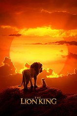 |
The lion king (live action) NV/OV:Duur: -Genre: Animatie, avontuur, familiefilm Verwacht: Vanaf 17 juli Simba is een jonge leeuw en zoon van leeuwenkoning Mufasa. Hij kijkt op tegen zijn vader en neemt zijn koninklijke bestemming ter harte. Dat zint Mufasa's jaloerse broer Scar absoluut niet en smeedt samen met een groep hyena's een plan om zowel Mufasa als Simba uit de weg te ruimen, zodat hij zelf de macht kan grijpen. |
|||||||||||||||||||||||||||||||||||||||||||||||||||||||||||||||||||||||||||||||||||||||||||||||||
| Regie: Jon Favreau | Cast: Donald Glover, Beyoncé Knowles, James Earl Jones, Chiwetel Ejiofor | |||||||||||||||||||||||||||||||||||||||||||||||||||||||||||||||||||||||||||||||||||||||||||||||||
The hustle:Duur: 94 minutenGenre: Komedie Verwacht: Vanaf 17 juli De elegante Josephine (Anne Hathaway) leert de nog amateuristische Penny (Rebel Wilson) de kneepjes van het oplichtersvak. Samen besluiten ze om de foute mannen die hen hebben belazerd te grazen te nemen. |
||||||||||||||||||||||||||||||||||||||||||||||||||||||||||||||||||||||||||||||||||||||||||||||||||
| Regie: Chris Addison | Cast: Rebel Wilson, Anne Hathaway, Alex Sharp, Ingrid Oliver | |||||||||||||||||||||||||||||||||||||||||||||||||||||||||||||||||||||||||||||||||||||||||||||||||
| 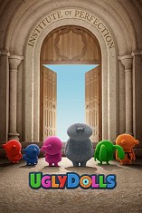 |
Ugly dolls:Duur: 87 minutenGenre: Animatie, familiiefilm, komedie Verwacht: Vanaf 31 juli Moxy leeft een gelukkig bestaan in het dorpje Uglyville. Avontuurlijk ingesteld wil ze met haar vrienden Ox, Wage, Babo, Lucky Bat en Ugly Dog de wereld verkennen. Ze komen terecht op een plek genaamd Perfection waar perfecte poppen wonen onder het leiderschap van Lou. Hij is de perfectie zelve en traint de inwoners om zich op een bepaalde voorgeschreven manier te gedragen. Dit met het doel om de menselijke wereld te kunnen betreden. |
|||||||||||||||||||||||||||||||||||||||||||||||||||||||||||||||||||||||||||||||||||||||||||||||||
| Regie: Kelly Asbury | Cast: Kelly Clarkson, Nick Jonas, Janelle Monáe, Blake Shelton | |||||||||||||||||||||||||||||||||||||||||||||||||||||||||||||||||||||||||||||||||||||||||||||||||
| 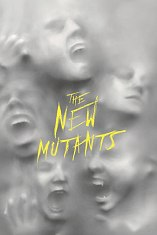 |
The new mutants:Duur: -Genre: Actie, avontuur, horror, sci-fi Verwacht: Vanaf 31 juli Vijf jonge mutanten ontdekken nog maar net hun speciale krachten, terwijl ze worden vastgehouden in een geheime locatie tegen hun wil. Ze laten het er niet bij en proberen met hun krachten te ontsnappen. |
|||||||||||||||||||||||||||||||||||||||||||||||||||||||||||||||||||||||||||||||||||||||||||||||||
| Regie: Josh Boone | Cast: Anya Taylor-Joy, Maisie Williams, Charlie Heaton, Blu Hunt | |||||||||||||||||||||||||||||||||||||||||||||||||||||||||||||||||||||||||||||||||||||||||||||||||
| 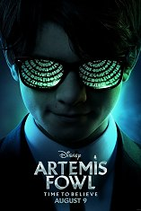 |
Artemis Fowl:Duur: -Genre: Avontuur, fantasy Verwacht: Vanaf 7 augustus Artemis Fowl, het 12-jarige genie, afkomstig uit een lange lijn van criminele meesterbreinen, belandt in een strijd van kracht en sluwheid tegen een machtig, verborgen ras van feeën die mogelijk achter de verdwijning van zijn vader zit. |
|||||||||||||||||||||||||||||||||||||||||||||||||||||||||||||||||||||||||||||||||||||||||||||||||
| Regie: Kenneth Branagh | Cast: Ferdia Shaw, Lara McDonnell, Judi Dench, Josh Gad | |||||||||||||||||||||||||||||||||||||||||||||||||||||||||||||||||||||||||||||||||||||||||||||||||
| 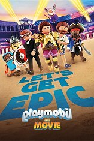 |
Playmobil: The movie NV/OV:Duur: 110 minutenGenre: Animatie, familiefilm Verwacht: Vanaf 7 augustus Marla's jongere broer Charlie verdwijnt voor haar ogen in de wereld van Playmobil. Ze ziet geen andere optie dan mee te reizen naar dit bizarre universum waarin ze een zoektocht begint. Tijdens haar avontuur ontmoet ze diverse figuren die haar meehelpen Charlie terug te vinden. |
|||||||||||||||||||||||||||||||||||||||||||||||||||||||||||||||||||||||||||||||||||||||||||||||||
| Regie: Lino DiSalvo | Cast: Anya Taylor-Joy, Daniel Radcliffe, Kenan Thompson, Gabriel Bateman | |||||||||||||||||||||||||||||||||||||||||||||||||||||||||||||||||||||||||||||||||||||||||||||||||
| 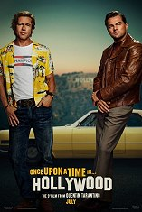 |
Once upon a time in Hollywood:Duur: 165 minutenGenre: Drama, komedie, misdaad, thriller Verwacht: Vanaf 14 juli De zomer van 1969. Een tv-acteur, Rick Dalton genaamd, heeft slechts in een succesvolle westernserie gespeeld en verlangt naar meer succes. Cliff Booth, zijn rechterhand en stuntman, verlangt echter ook naar een filmcarrière. Het verhaal van Dalton doorkruist de moord op zijn buurvrouw Sharon Tate en vier van haar vrienden door de Charles Mansons sekte. |
|||||||||||||||||||||||||||||||||||||||||||||||||||||||||||||||||||||||||||||||||||||||||||||||||
| Regie: Quentin Tarantino | Cast: Leonardo DiCaprio, Brad Pitt, Margot Robbie, Al Pacino | |||||||||||||||||||||||||||||||||||||||||||||||||||||||||||||||||||||||||||||||||||||||||||||||||
| 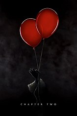 |
It: Chapter two:Duur: -Genre: Horror Verwacht: Vanaf 18 september Het kwaad huist zich opnieuw in het stadje Derry als regisseur Andy Muschietti in It Chapter Two de Losers Club – jong en oud – weer bij elkaar brengt naar waar het allemaal begon. De film is Muschietti’s opvolger van de in 2017 veelgeprezen en wereldwijde hit It, die meer dan 700 miljoen dollar opbracht. De genreoverstijgende film werd een cultureel fenomeen en is de grootste horrorfilm aller tijden. Omdat elke 27 jaar het kwaad terugkeert naar het stadje Derry, in de Amerikaanse staat Maine, brengt It Chapter Twode personages – die allen hun eigen weg zijn gegaan – weer bij elkaar als volwassenen, bijna drie decennia na de gebeurtenissen van de eerste film. |
|||||||||||||||||||||||||||||||||||||||||||||||||||||||||||||||||||||||||||||||||||||||||||||||||
| Regie: Andy Muschietti | Cast: James McAvoy, Jessica Chastain, Jay Ryan, Bill Hader | |||||||||||||||||||||||||||||||||||||||||||||||||||||||||||||||||||||||||||||||||||||||||||||||||
| 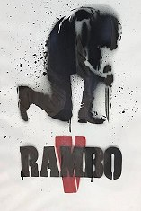 |
Rambo V: The last blood:Duur: -Genre: Actie Verwacht: Vanaf 18 september John Rambo is met pensioen en woont op een boerderij in de Verenigde Staten. Op een dag hoort hij van Maria, een oude familievriendin en vastgoedmanager, dat zijn dochter is ontvoerd door een Mexicaans drugskartel. Al snel komt John terecht in de gewelddadige wereld van de sekshandel. Hij werkt samen met een journalist, wiens halfzus ook is ontvoerd, en moet al zijn vaardigheden inzetten om de meisjes te redden en een kwaadaardige misdaadbaas neer te halen. |
|||||||||||||||||||||||||||||||||||||||||||||||||||||||||||||||||||||||||||||||||||||||||||||||||
| Regie: Adrian Grunberg | Cast: Sylvester Stallone, Paz Vega, Joaquín Cosio, Óscar Jaenada | |||||||||||||||||||||||||||||||||||||||||||||||||||||||||||||||||||||||||||||||||||||||||||||||||
| 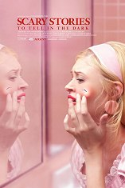 |
Scary stories to tell in the dark:Duur: -Genre: Horror Verwacht: Vanaf 25 september Stella is een jong meisje dat nog steeds wordt achtervolgd door de verdwijning van haar moeder op de avond van Halloween - een incident waarvan ze vermoedt dat haar vader meer weet dan dat hij toegeeft. Jaren later zijn Stella en haar vrienden betrokken bij een Halloween-grap die verkeerd afloopt. Maar zijn ze echt in de fout gegaan of was het het werk van een wraakzuchtige geest - een vrouwelijke geest die haar enge verhalen gebruikt om te jagen op een groep tieners, wanneer ze beginnen met het onderzoeken van de verdwijning van meerdere kinderen? |
|||||||||||||||||||||||||||||||||||||||||||||||||||||||||||||||||||||||||||||||||||||||||||||||||
| Regie: André Ovredal | Cast: Zoe Colletti, Michael Garza, Austin Abrams, Gabriel Rush | |||||||||||||||||||||||||||||||||||||||||||||||||||||||||||||||||||||||||||||||||||||||||||||||||